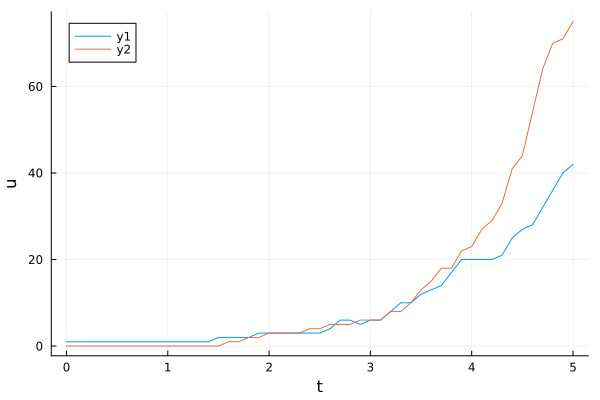
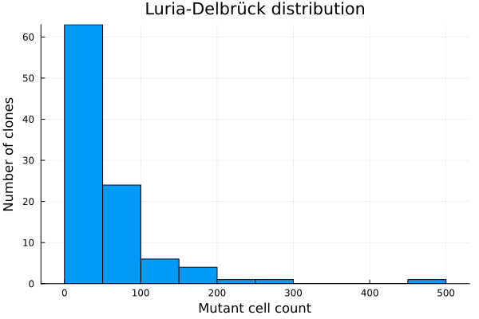
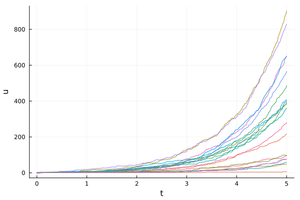
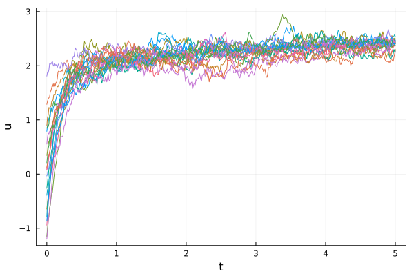

Luria-Delbrück fluctuation experiment
A Luria-Delbrück fluctuation experiment consists of growing many independent clones from single cells (or organisms), all under the same conditions but each starting from a (possibly different) initial state. The key quantity of interest is the distribution of some summary statistic — such as the number of mutant cells — across clones.
The fluctuation_experiment function provides a convenient shortcut for this workflow. It takes a ConstantRateBranchingProblem, a distribution from which initial states are sampled independently for each clone, and the number of clones to simulate. Internally it uses SciML's EnsembleProblem interface and automatically applies reduce_tree to each clone's branching tree, returning an EnsembleSolution of ReducedBranchingProcessSolution objects.
Setting up the problem
We model the classical Luria-Delbrück experiment as a birth-death process in which a wild-type cell (W) can acquire a mutation and become a mutant cell (M), with no back-mutations:
using Catalyst
rn = @reaction_network begin
μ, W --> M
end
u0 = [:W => 1, :M => 0]
p = [:μ => 0.1]
tspan = (0.0, 5.0)We set up the corresponding JumpProblem and wrap it in a ConstantRateBranchingProblem:
using DifferentialEquations, JumpProcesses
jprob = JumpProblem(rn, u0, tspan, p)
using BranchingProcesses
λ = 1.0 # branching (cell division) rate
nchild = 2 # each cell divides into two daughter cells
bjprob = ConstantRateBranchingProblem(jprob, λ, nchild);Running a fluctuation experiment
In this model every clone starts from the same initial condition (one wild-type cell, zero mutants). We encode this as a product_distribution of two Dirac distributions:
using Distributions
u0_dist = product_distribution([Dirac(1), Dirac(0)])We then call fluctuation_experiment to simulate 100 independent clones. Each clone starts from a fresh sample drawn from u0_dist, and the branching tree is immediately reduced (summed over all live cells) by reduce_tree:
results = fluctuation_experiment(bjprob, u0_dist, 100;
alg=SSAStepper(),
ensemble_alg=EnsembleThreads(),
reduce_kwargs=(; dt=0.1));results is an EnsembleSolution whose elements are ReducedBranchingProcessSolution objects. We can inspect a single clone's reduced time series:
using Plots
plot(results[1])
Visualising the distribution across clones
The main interest in a fluctuation experiment is the distribution of a quantity across clones at the end of the experiment. We extract the number of mutant cells (M, index 2) at the final time for each clone:
mutant_counts = [sol.u[end][2] for sol in results]
histogram(mutant_counts; #bins=0:maximum(mutant_counts)+1,
xlabel="Mutant cell count", ylabel="Number of clones",
label="", title="Luria-Delbrück distribution")
The characteristic feature of the Luria-Delbrück distribution is its heavy tail: most clones have few or no mutants, while a small number of "jackpot" clones carry many mutants due to early mutations.
Using a non-trivial initial-state distribution
fluctuation_experiment shines when the initial condition itself varies across clones. As a second example we use the branching Ornstein-Uhlenbeck process and draw each clone's initial state from a normal distribution:
f(u,p,t) = p[2]*(p[1]-u)
g(u,p,t) = p[3]
μ_ou = 2.0; α = 5.0; σ = 0.5
oup = SDEProblem(f, g, μ_ou, (0.0, 5.0), (μ_ou, α, σ))
boup = ConstantRateBranchingProblem(oup, 1.0, 2)
u0_dist_ou = Normal(0.0, 1.0) # clones start away from the OUP steady stateresults_ou = fluctuation_experiment(boup, u0_dist_ou, 20;
alg=EM(), solver_kwargs=(; dt=0.01),
reduce_kwargs=(; dt=0.01),
ensemble_alg=EnsembleSerial());Plot the reduced (summed) time series for all 20 clones together:
plt = plot(; xlabel="t", ylabel="sum of cells", legend=false)
for sol in results_ou
plot!(plt, sol)
end
plt
Each clone starts from a different initial state and, because the equilibration rate α is fast relative to the branching rate λ, the population quickly relaxes towards the steady-state value $\mu = 2.0$.
A custom reduction function
By default fluctuation_experiment uses sum to aggregate cell values at each time point, but any callable is accepted. For instance, to track the maximum value across all live cells in each clone:
results_max = fluctuation_experiment(boup, u0_dist_ou, 20;
alg=EM(), solver_kwargs=(; dt=0.01),
reduction=maximum,
ensemble_alg=EnsembleThreads());
plt2 = plot(; xlabel="t", ylabel="max over cells", legend=false)
for sol in results_max
plot!(plt2, sol)
end
plt2